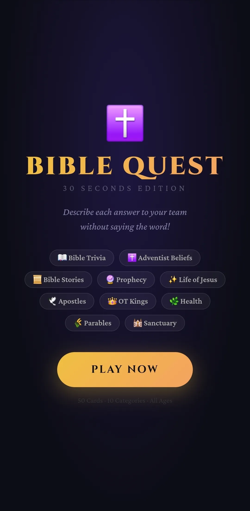

Personal project, shipped and played
Bible Quest
A 30 Seconds-style party game for Bible and Adventist trivia, built for fellowship game nights.
View project media
A familiar game format, made relevant.
30 Seconds asks players to describe five answers to their team before the timer runs out, without saying the word itself. There was no version built around the Bible knowledge and Adventist beliefs used at our fellowship game nights, so I made one from scratch.
The result is 50 cards across 10 categories, from Bible trivia and the parables of Jesus to the 28 Fundamental Beliefs, the health message, and the Great Disappointment of 1844. Every answer was written to be playable aloud without giving itself away.
Easy to start. Ready when the room is.
I chose an installable Progressive Web App so players can open one link, add it to their home screen, and play offline without an app-store step. A printable card set makes game night resilient when Wi-Fi or battery life is not.
Played at BIUST Adventist Fellowship events
In play
Browse the mobile game flow and watch a short demo.
Built with
- React
- Progressive Web App
- Netlify
- Printable assets